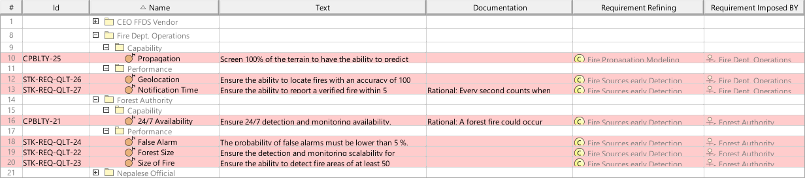
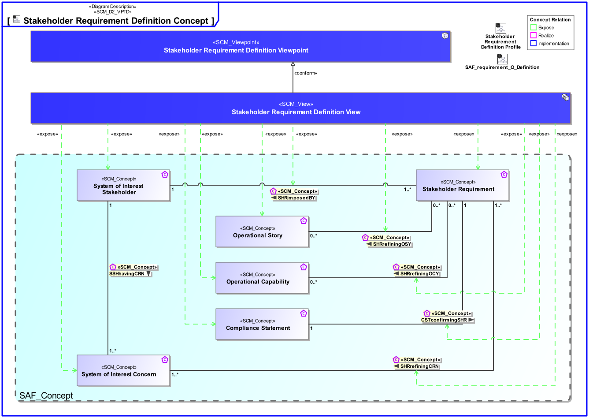
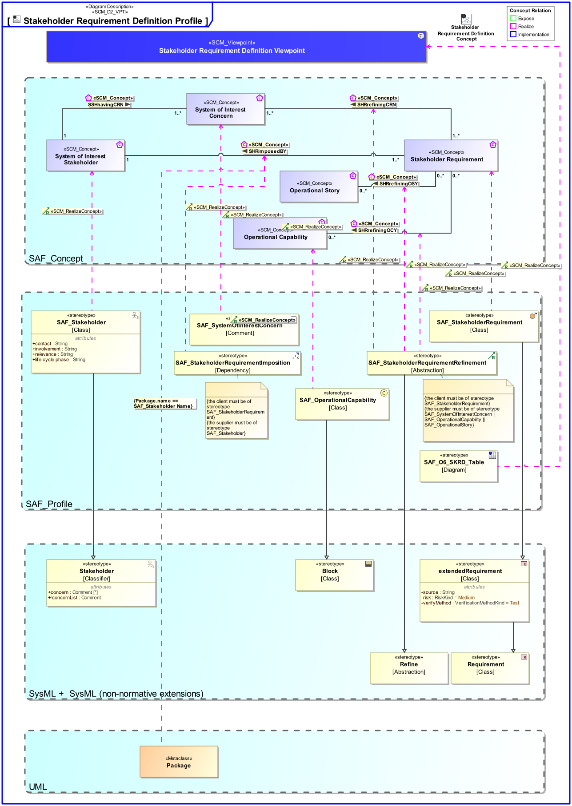

O6_SKRD Stakeholder Requirement Definition Viewpoint
| Domain | Aspect | Maturity |
|---|---|---|
| Operational | Requirement |

The Stakeholder Requirement Definition Viewpoint specifies all capabilities, functions and properties, that the intended solution shall possess or expose from the perspective of the Stakeholders. The Stakeholder Requirement Definition Viewpoint also captures constraints for the system to be developed from stakeholders perspective.
The Stakeholder Requirement Viewpoint supports the “Stakeholder Needs and Requirements Definition Process” activities of the INCOSE SYSTEMS ENGINEERING HANDBOOK 2015 [§ 4.2] and contributes to the identification of solution constraints.
A tabular format lisiting
The following Stereotypes / Model Elements are used in the Viewpoint:
The Diagram shows the concepts exposed by the viewpoint, and related concepts if necessary.

| Concept | Documentation |
|---|---|
| Operational Capability | A Operational Capability is a high-level description or specification of an organizational unit's ability to execute a specified course of action, to implement a business process or to provide a service. Operational Capabilities typically require people, processes, infrastructure, technology and supporting systems to be implemented. A Operational Capability is an enduring element, its implementation may change over time. A necessary or desired change of a Operational Capability triggers the updated of involved systems or the integration new systems. Aliases: UAF::Capability NAF4::Capability |
| Operational Story | The Operational Story represents one or more Operational Use Cases in the Usage Scenario identified by the Operational Context. The Operational Story is described as narrative story-telling. |
| Compliance Statement | Used in the communication between Stakeholder (Customer) and Contractor. Compliance Statements are the first answer to the Stakeholder Requirements and are usually together with the Stakeholder Requirements part of the contract. They are valuable input for the System development and System Requirement elicitation. Information status: * not compliant (with explanation / rationale) * partially compliant (with explanation / rationale) * fully compliant |
| CSTconfirmingSHR | Specifies the fact that a Stakeholder Requirement has certain States of Compliance. |
| SHRimposedBY | Specifies the fact that a Stakeholder Requirement is provided by Stakeholders. |
| SHRrefiningCRN | Specifies the fact that a Stakeholder Concern is refined by Stakeholder Requirements. |
| SHRrefiningOCY | Specifies the fact that an Operational Capability is refined by Stakeholder Requirements. |
| SHRrefiningOSY | Specifies the fact that an Operational Story is refined by Stakeholder Requirements. |
| Stakeholder Requirement | A Stakeholder Requirement is a Requirement imposed by a Stakeholder. Stakeholder Concerns are refined by Stakeholder Requirements applicable for the SOI. The Stakeholder Requirements are a result of discussions and agreements of how the SOI addresses the Concerns of the respective Stakeholder. |
| System of Interest Concern | Any kind of interest a Stakeholder has. Note: Redundant with the meaning of "Need"? |
| System of Interest Stakeholder | An individual, team, or organization (or classes thereof) with interests in, or concerns relative to, a system. It may be involved in any life cycle phase of the System. The Stakeholder represents a class or kind of Stakeholders. Stakeholders have a certain involvement: Stakeholder Involvement captures the influence of a project specific Stakeholder on the System. Stakeholder Involvement is characterized by * Contact Person * Kind of involvement * Life Cycle Phases involved * Relevance decision if and up to which degree Stakeholder is considered * Rationale for decision when Stakeholder is not considered |
The Diagram shows the implementation of exposed concepts.
